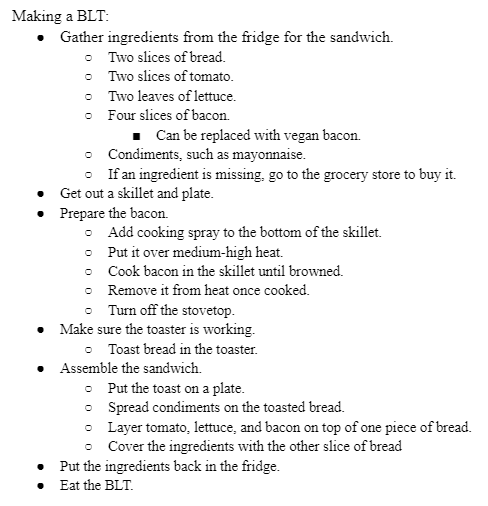
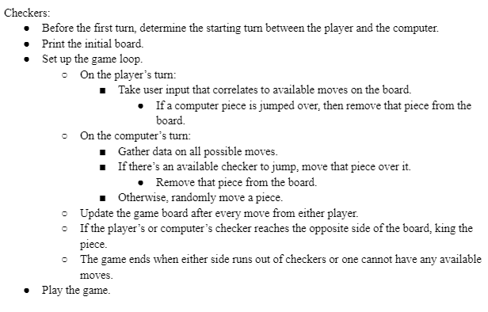
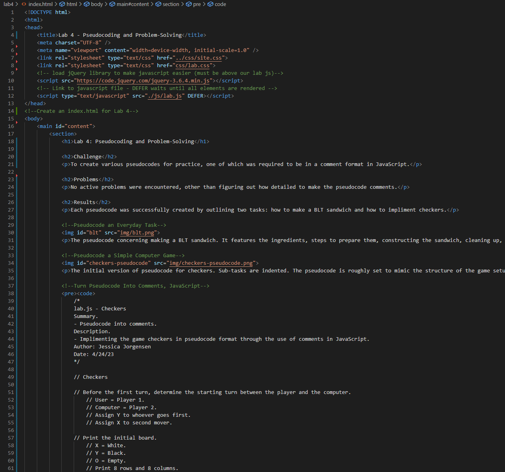
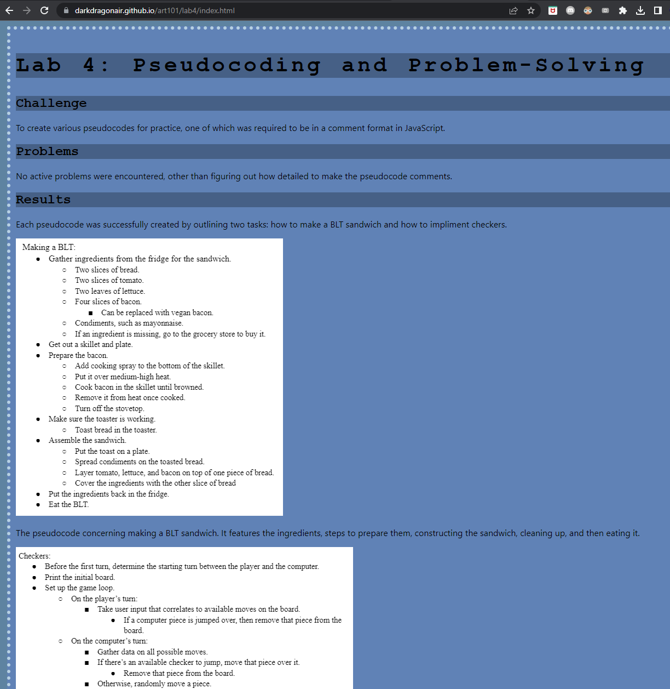

Lab 4: Pseudocoding and Problem-Solving
Challenge
To create various pseudocodes for practice, one of which was required to be in a comment format in JavaScript.
Problems
No active problems were encountered, other than figuring out how detailed to make the pseudocode comments.
Results
Each pseudocode was successfully created by outlining two tasks: how to make a BLT sandwich and how to impliment checkers.
The pseudocode concerning making a BLT sandwich. It features the ingredients, steps to prepare them, constructing the sandwich, cleaning up, and then eating it.
The initial version of pseudocode for checkers. Sub-tasks are indented. The pseudocode is roughly set to mimic the structure of the game setup and loop.
/*
lab.js - Checkers
Summary.
- Pseudocode into comments.
Description.
- Implimenting the game checkers in pseudocode format through the use of comments in JavaScript.
Author: Jessica Jorgensen
Date: 4/24/23
*/
// Checkers
// Before the first turn, determine the starting turn between the player and the computer.
// User = Player 1.
// Computer = Player 2.
// Assign Y to whoever goes first.
// Assign X to second mover.
// Print the initial board.
// X = White.
// Y = Black.
// O = Empty.
// Print 8 rows and 8 columns.
// Loop through each row.
// Loop through each space.
// Print X, O alternatively in rows 1, 2, and 3.
// Print O in rows 4 and 5.
// Print Y, O alternatively in rows 6, 7, and 8.
// Print | in between cells.
// Print horizonatal line in between rows.
// Define move function.
// Implement code to make move on board.
// Define valid move.
// Check board spaces to see if move is valid.
// Define Computer intelligence.
// Check all possible moves.
// Analyze optimal paths to win.
// Define Kinging.
// If the X or Y reaches the opposite side of the board, king the piece.
// X,Y = K.
// K can move back and forth.
// Set up the game loop:
// Print board.
// On the User's turn:
// Take user input that correlates to available moves on the board.
// Check if the move is valid.
// If the move is valid, update board.
// If move not valid, ask for new input.
// If a Computer piece is jumped over:
// Remove that piece from the board.
// Update board.
// End User turn.
// On the Computer's turn:
// Gather data on all possible moves.
// If there's an available checker to jump, move that piece over it.
// Remove that piece from the board.
// Update board.
// Otherwise, randomly move a piece.
// Update board.
// End Computer turn.
// The game ends when either side runs out of checkers or one cannot have any available moves.
// End Game Loop.
JavaScript comments in the lab.js file for Lab 4, concerning an extended version of the checkers game. It is structured in a way that highlights the functions and loops required for a proper implimentation, but does not feature any actual coding.
A partial index screenshot of Lab 4. Contains a title, headings challenge, problems, and results, three screenshots (including this one), commented code for checkers, and links to the rest of the pages.
Lab 4, live on the internet. Features the entirety of the HTML format and screenshots pertaining to the pseudocode, as well as the JavaScript comments for the checkers game.